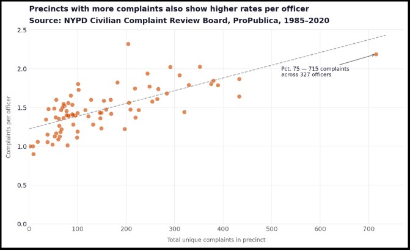
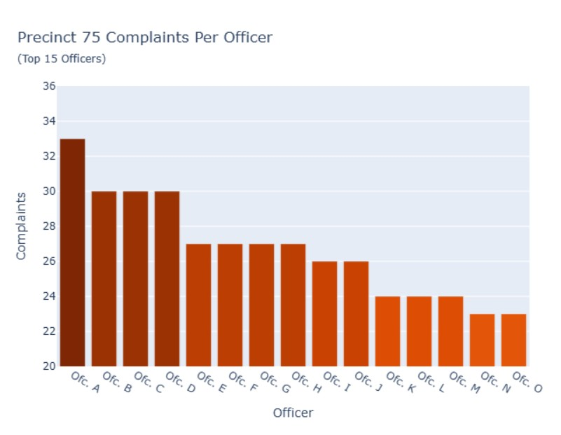

Project 2: Persuasive or Deceptive Visualization?
Devin Ellison — deellison@ucsd.edu
Amey Gupta — amg032@ucsd.edu
Ja-Chan Lu — jal140@ucsd.edu
Proposition: Precinct 75 Has a Disproportionately High Complaint Rate, Reflecting a Systemic Problem Rather Than Just a Few Bad Officers
FOR the Proposition

Precincts with more complaints also show higher rates per officer. Precinct 75 stands out as a clear outlier with 715 complaints across 327 officers. Source: NYPD Civilian Complaint Review Board, ProPublica, 1985–2020.
Design Decisions and Rationale:
- (Score +1.5) Plotting complaints per officer on the y-axis rather than raw complaint counts: Normalizing by the officer count reframes the proposition from "big precincts have more complaints" (which would be the usually expected idea) to "something about these precincts produces more complaints per person assigned there," which is a much greater institutional argument.
- (Score −1) Adding a linear regression trend line without noting that there is a heavy influence from Precinct 75 being an outlier: Precinct 75’s sports a hefty 715 complaints, which is approximately double the next highest precinct. As a result of this fact, the trend line is pulled upward and its slope is steepened, making the positive relationship look stronger and more consistent than it would be if computed on the remaining 78 precincts alone.
- (Score +1.5) Starting the y-axis at 0: Starting the y-axis at 0 leaves this sort of large empty region beneath the data, which compresses the visible spread and makes the trend line appear steeper relative to the data than it actually is. A viewer looking at the chart would perceive a stronger relationship between complaint volume and rate per officer than supported by the data alone.
- (Score −0.5) Annotating only Precinct 75: By only calling out the greatest outlier by name, we focus the viewer’s attention onto the case that best supports the proposition, while leaving the rest of the data anonymous and harder to dissect individually.
AGAINST the Proposition

Top 15 officers in Precinct 75 by total complaint count. The y-axis begins at 20, and only the highest-complaint officers from the highest-complaint precinct are shown.
Design Decisions and Rationale:
- (Score −2) The y-axis starts at 20 rather than 0, to make the difference between the bars greater. This emphasizes the difference between the officers, making those with 25+ complaints look more drastic, when in reality it’s not that bad.
- (Score −2) Precinct 75 was chosen because it has the most complaints out of any, which means the highest complained officers have up to 30 complaints, where as in other precincts most officers wouldn’t have anything near that.
- (Score −1.5) Only the 15 worst officers with the most complaints were chosen from the precinct. This mainly helps keep the graph from being too cluttered with 150-ish bars, but makes the number of complaints from officers seem much worse than it really is.
- (Score +1) The bars are color graded from worst to best, with the worst officer being a bit darker than the best. This makes the worse complaint values stand out a bit more against the others, but isn’t necessarily misleading beyond just being emphasized. I think it would’ve been misleading if I had used red for the worse against a different color, or if the difference had been more drastic.
Final Reflection
Before starting this project, we, collectively as a group, weren't aware just how many standard and ordinary design choices would end up sitting somewhere in this sort of gray area between honest and manipulative. Having to decide which precincts to include, how to word a title, whether to call out a specific data point and the like all feel like regular calls to make, but each one subtly alters what a viewer sees and walks away believing. As such, the more our group sat with those decisions, the more we came to understand the line between making a chart readable and directing a reader toward a conclusion much, much blurrier than we initially gave it credit for.
When working on this project’s FOR aspect, we found that the most effectively persuasive choices weren't the loud ones. Normalizing the complaint counts by officer size felt like a transparent and rigorous analytical choice, and in many ways it was, but it also had the effect of making the proposition that much harder to fact-check, as viewers would have to reconstruct the original data themselves to offer some sort of push-back. What that taught us was that the most effective form of persuasion in data visualization isn't some manipulated axis or the like but rather an analytical decision that looks solid and reasonable on the surface but has already done the work of steering the viewer before they process anything. That realization changed how we think about what it means to visualize data ethically.